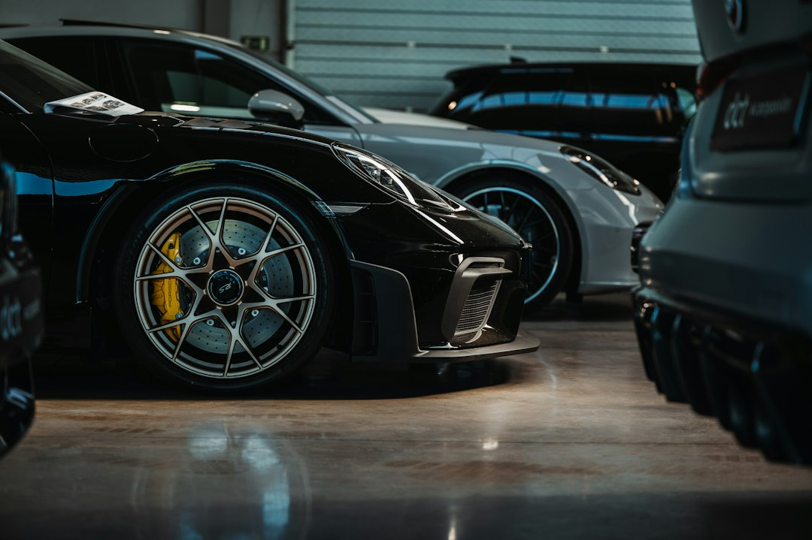

L’evoluzione digitale dei concessionari auto: come DriveMotion AI trasforma gli annunci usati nei prossimi 24 mesi

DriveMotion AI: L'evoluzione digitale per concessionari auto e saloni usato nei prossimi 24 mesi
- Il mercato automotive usato evolve verso contenuti digitali più sofisticati per attrarre clienti.
- Piazzali poco curati e annunci standard riducono l’efficacia delle vendite online.
- DriveMotion AI rivoluziona la promozione con video professionali e ambientazioni di lusso a costi contenuti.
Analisi approfondita della notizia e delle implicazioni operative
Negli ultimi anni, il settore automotive ha assistito a un profondo cambiamento nel modo in cui concessionari, saloni usato e professionisti del settore presentano le proprie offerte. L’avanzare delle tecnologie digitali e la concorrenza sempre più aggressiva sui canali online hanno imposto un salto qualitativo nella valorizzazione dei veicoli in vendita. In particolare, i piazzali con sfondi grezzi o poco curati rappresentano un freno significativo alla capacità di attrarre l’attenzione degli utenti su social media e portali di vendita. Questa criticità, se trascurata, riduce notevolmente la percezione di qualità e affidabilità del venditore, con impatti diretti sulle conversioni di vendita.
Nei prossimi 24 mesi, l’adozione di nuove tecnologie di automazione e intelligenza artificiale diventerà un fattore chiave di competitività per tutti gli operatori. L’uso di contenuti multimediali evoluti, come video promozionali con sfondi personalizzati, porterà a un incremento dell’engagement e a un miglioramento dell’immagine di brand. Inoltre, la capacità di semplificare e velocizzare la creazione di questi contenuti digitali sarà determinante per ottimizzare i costi operativi e massimizzare il ROI.
Le conseguenze e i costi di non agire
I concessionari che continuano a utilizzare foto e video tradizionali con sfondi poco attrattivi si espongono a una serie di effetti negativi. I principali rischi includono la difficoltà a distinguersi rispetto ai concorrenti, una percezione di scarsa qualità e professionalità agli occhi dei potenziali acquirenti e il sostanziale aumento dei tempi di vendita. Questi fattori si traducono in costi nascosti come l’immobilizzo del capitale e la necessità di sconti maggiori per stimolare la domanda.
Inoltre, i contenuti poco efficaci generano scarsi risultati sui social media e campagne digitali, riducendo la visibilità e l’efficacia delle strategie di marketing. Questo crea un circolo vizioso per cui gli investimenti pubblicitari raggiungono un pubblico meno motivato, con conseguente abbassamento delle performance complessive. Ignorare l’innovazione tecnologica, dunque, non è più un’opzione sostenibile per i professionisti che vogliono mantenere una posizione rilevante nel mercato usato.
Come DriveMotion AI risolve il problema
DriveMotion AI di RM Studio si configura come la risposta tecnologica naturale a questa sfida. Grazie all’utilizzo di intelligenza artificiale avanzata, il software elimina automaticamente lo sfondo originale del piazzale – spesso poco convincente o dozzinale – e posiziona l’auto in dieci ambientazioni di lusso, come showroom high-end, loft moderni o scenari notturni cyberpunk, estremamente accattivanti.
Questa tecnologia non solo esalta il valore percepito delle auto usate, ma genera anche video promozionali HD completi di voce narrante professionale, migliorando notevolmente la fruibilità e l’efficacia degli annunci sui social e piattaforme digitali. Il processo è rapido, intuitivo e scalabile, permettendo ai concessionari e saloni usato di ottimizzare le risorse dedicate alla produzione dei contenuti multimediali.
Con un modello di business Pay-As-You-Go che prevede pacchetti a partire da soli €14.90 per video, DriveMotion AI rende accessibile a ogni dimensione di business l’adozione di tecnologie di punta senza grandi investimenti iniziali. Questo consente di mantenere elevato il livello qualitativo delle campagne di vendita, incrementando lead e conversioni.
| Aspetto | Gestione Tradizionale | Con DriveMotion AI |
|---|---|---|
| Sfondi Piazzale | Sfondo originale, spesso caotico e poco curato | Rimozione automatica con sostituzione in ambientazioni di lusso (Showroom, Loft, Notte Cyber) |
| Tipologia Contenuti | Foto standard e video amatoriali | Video HD con voce narrante professionale integrata |
| Tempi di Realizzazione | Tempi lunghi e risorse interne dedicate | Automatizzato, rapido, scalabile |
| Costi | Alti costi fissi e investimento in personale o esterni | Modello Pay-As-You-Go, da €14.90 per video |
| Impatto sul marketing | Limitato a causa contenuti poco attrattivi | Aumento engagement e conversioni con video professionali di qualità |
💡 Ti è stato utile questo approfondimento?
Condividilo con un collega o un amico del settore Concessionari Auto, Saloni Usato e Professionisti Automotive a cui potrebbe interessare!
FAQ
1. Quali sono i vantaggi principali di usare DriveMotion AI per i concessionari?
DriveMotion AI consente di elevare la qualità visiva degli annunci, valorizzando il veicolo con ambientazioni di lusso e video promozionali professionali, migliorando l’attrattività e accelerando le vendite.
2. Quanto tempo richiede la produzione di un video con DriveMotion AI?
Il processo è automatizzato e rapido, generalmente consente di avere un video promozionale pronto in pochi minuti senza necessità di personale specializzato.
3. È possibile personalizzare le ambientazioni o la voce narrante nei video?
Sì, DriveMotion AI offre dieci ambientazioni di lusso tra cui scegliere e voci narranti professionali, per adattare il video alle esigenze del brand o del target di mercato.
Inizia Subito
Pacchetti Pay-As-You-Go da €14.90 per video promozionali HD.
Fonti Ufficiali e Risorse Esterne
Scopri l'Intelligenza Artificiale per la tua attività
Ottimizza i processi e aumenta le vendite con le soluzioni B2B di RM Studio.
Scopri DriveMotion AI